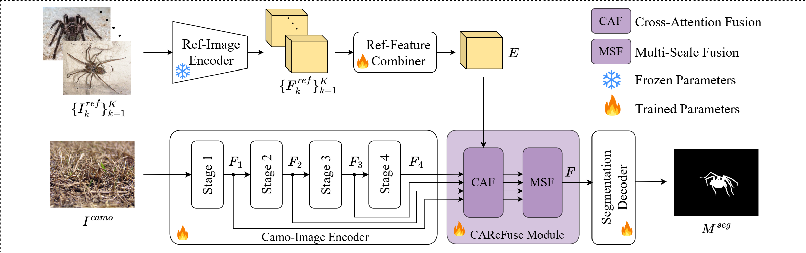
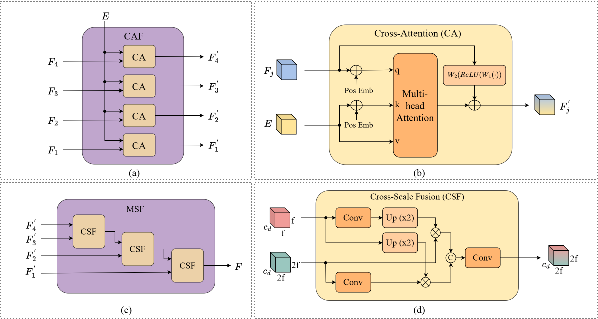
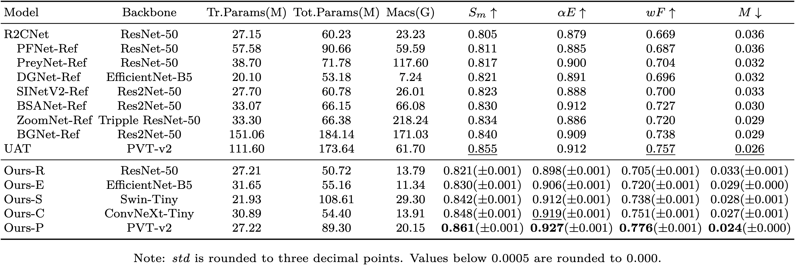
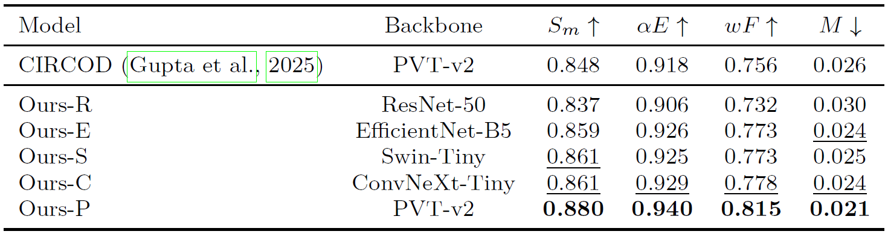
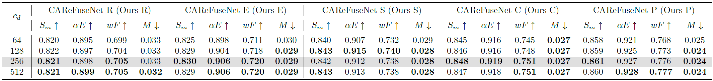
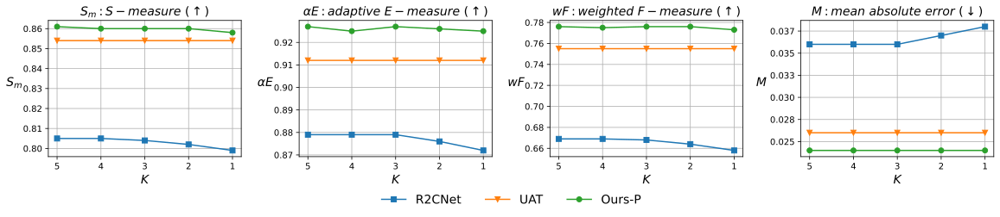
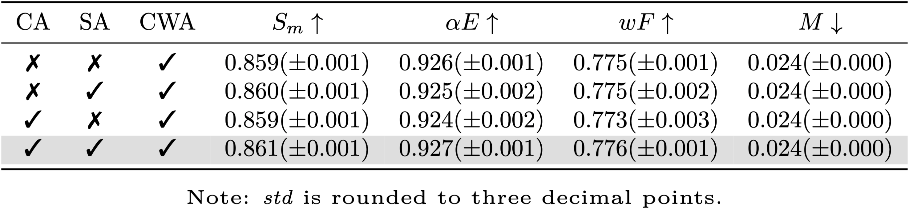
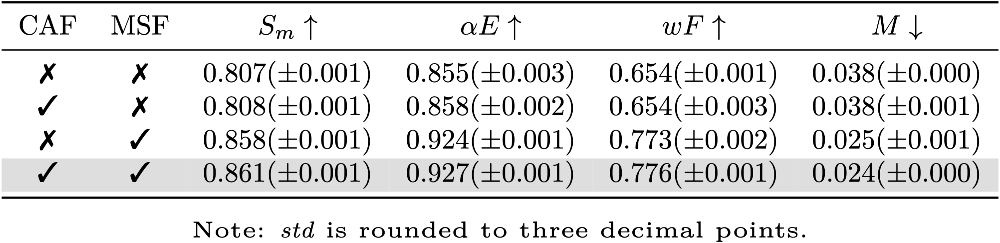

CAReFuseNet: Cross Attention Fusion Network for Referring Camouflaged Object Detection
Abstract
The Referring Camouflaged Object Detection (Ref-COD) task aims to generate a binary segmentation mask to detect camouflaged objects
of a specified category in an image, guided by reference image(s) containing salient example(s) of the target object of the same category.
With only a few methods (e.g., R2CNet and UAT) proposed to date, Ref-COD remains challenging due to the similarity of camouflaged objects
to their backgrounds and substantial feature gaps with salient references. At the same time, recent state-of-the-art approaches often
rely on heavy transformer-based encoder–decoder stacks or large frozen vision backbones, resulting in substantial parameter footprints
that hinder efficient deployment.
This work proposes `CAReFuseNet’, a novel framework featuring a cross-attention based reference feature fusion module that effectively extracts
reference-conditioned feature representations from camouflaged images while targeting parameter efficiency. The proposed CAReFuse module
leverages global interactions between reference and camouflaged image features via cross-attention, but constrains all fusion and decoding operations
to a lower dimensional feature space and employs a lightweight convolutional decoder. Combined with a frozen Ref-Image Encoder,
this design yields a compact Ref-COD model without sacrificing accuracy.
Extensive experiments on the R2C7K dataset show that our method achieves competitive performance against the state-of-the-art,
while using significantly fewer parameters. Further evaluations across multiple backbone architectures, including Swin Transformer,
ConvNeXt, EfficientNet, and ResNet, demonstrate that the proposed reference feature fusion module provides a general and parameter-efficient
building block for the referring camouflaged object detection task.
Method


Results
Quantitative Results:






Qualitative Results:


BibTeX
@article{YourPaperKey2024,
title={Your Paper Title Here},
author={First Author and Second Author and Third Author},
journal={Conference/Journal Name},
year={2024},
url={https://your-domain.com/your-project-page}
}